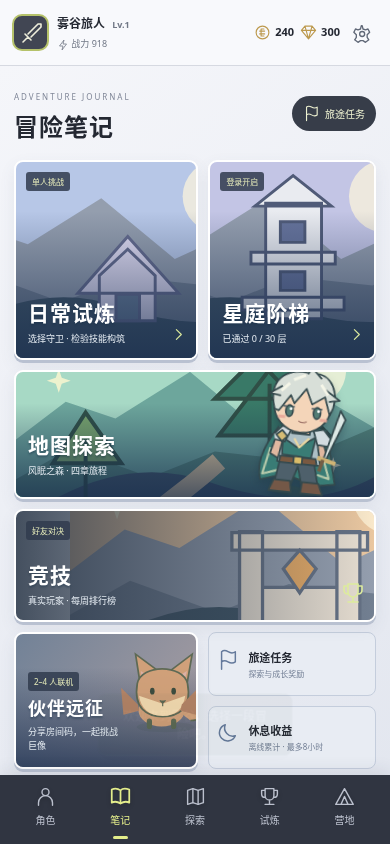
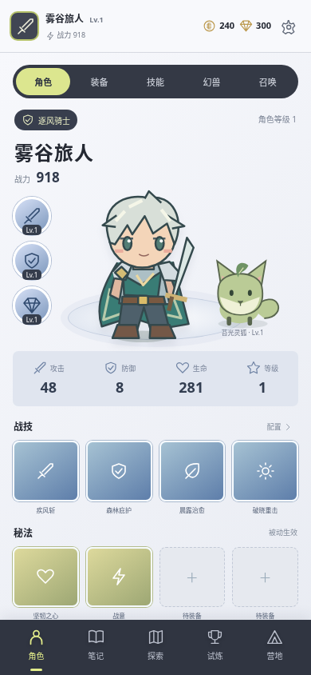
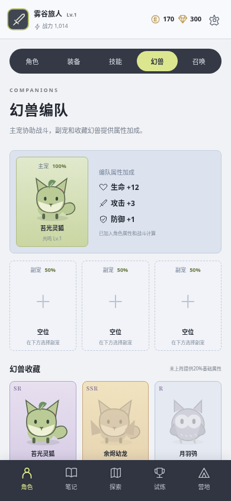
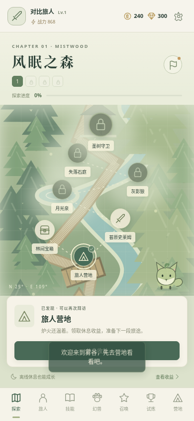
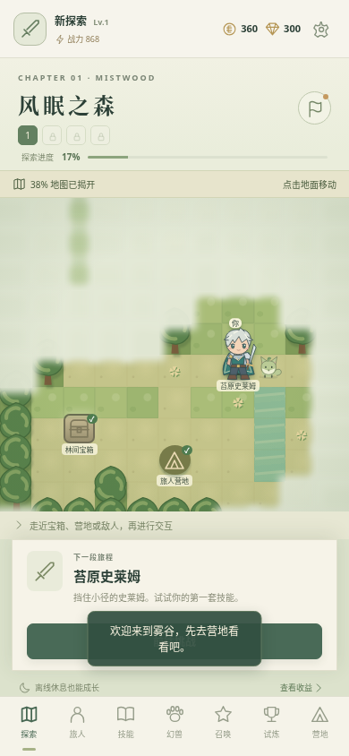
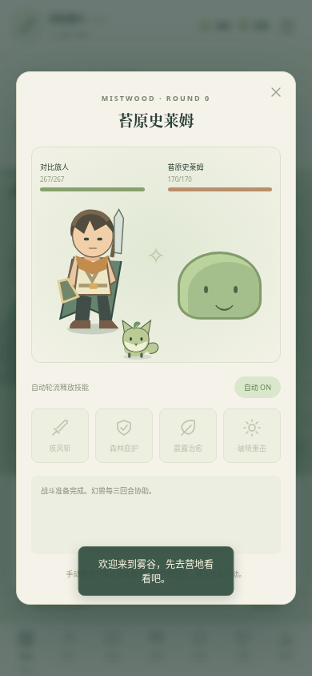
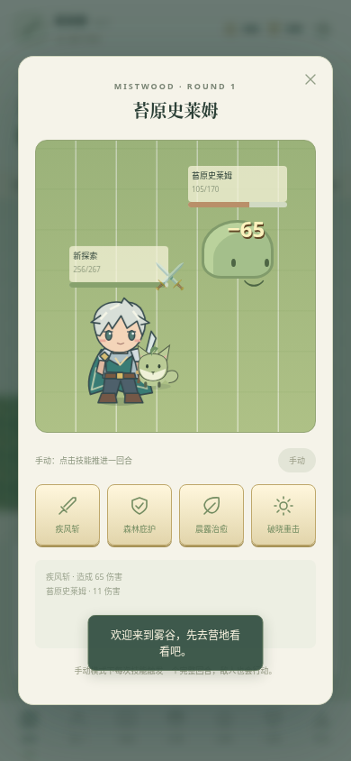

0.4 界面与玩法对比
本页是自制游戏的真实浏览器截图。不是原作截图，也不宣称已经完成国服还原。
根据玩家截图改出的页面

玩法入口：插画卡片与五主导航，可进入已有探索、试炼、竞技和远征。
角色：真实属性、装备、同行幻兽与四战技四秘法集中展示。
幻兽：主宠、三个副宠与收藏加成，实际影响属性，联网保存。核对来源：玩法入口与角色截图 · 角色详情 · 幻兽、装备和职业截图。原作图片未作为游戏素材再分发。
当前还有明显差距：三装备位、四职业、单敌人回合战斗；原作五装备、完整转职、遗物、空间多目标战斗、交易与赛季尚未实现。卡片插画也仍较简单。这里报告本次实改，不代表完整原作完成。
探索

之前：七节点路线图，角色不行走。
现在：可移动角色、碰撞、迷雾、场景交互；地图位置联网保存。战斗

之前：左右卡片与战报。
现在：Q版角色、敌人、幻兽与格子场景。数字来自实际血量变化，场景站位仍是表现层。尚未实现原作空间范围、多目标战斗、完整职业技能池、美术动作与内容量。0.3完成探索结构与战斗展示，0.4增加上述界面及编队功能。
原作官网 · 原作探索宣传参考 · 打开新版游戏 · 安卓测试包